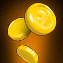

防御塔,范围型攻击,花费:40G;60G;80G
防御塔,单体型攻击,花费:20G;30G;50G
防御塔,范围型攻击,攻击带有减速效果,花费:100G;50G;50G
防御塔,直线型攻击,可攻击所在行列,花费:80G;100G;120G
技能"冰封禁制",在短时间内冻结所有怪物行动,花费:40G
技能"集中火力",在短时间内提高防御塔攻速,花费:40G
状态:生命值,生命值为0游戏结束
状态:金钱,通过消费金钱建造防御塔和使用技能
状态:怪物波数,即关卡数,随着波数改变怪物质量会提升